قضية سبأ ضد سنوات التعب
تم فتح هذا الملف بعد بلاغ عائلي يفيد بأن سبأ محمد علي المهيرات أنهت دراسة القانون بنجاح، وتخرجت من جامعة مؤتة.
أطراف القضية
القضية واضحة من أولها، بس حفاظًا على الشكل الرسمي قررنا نعرض التفاصيل.
مرفقات القضية
المرفقات التالية مرتبة حسب تسلسل الملف، من أول إعلان التخرج لآخر لقطة باليوم.
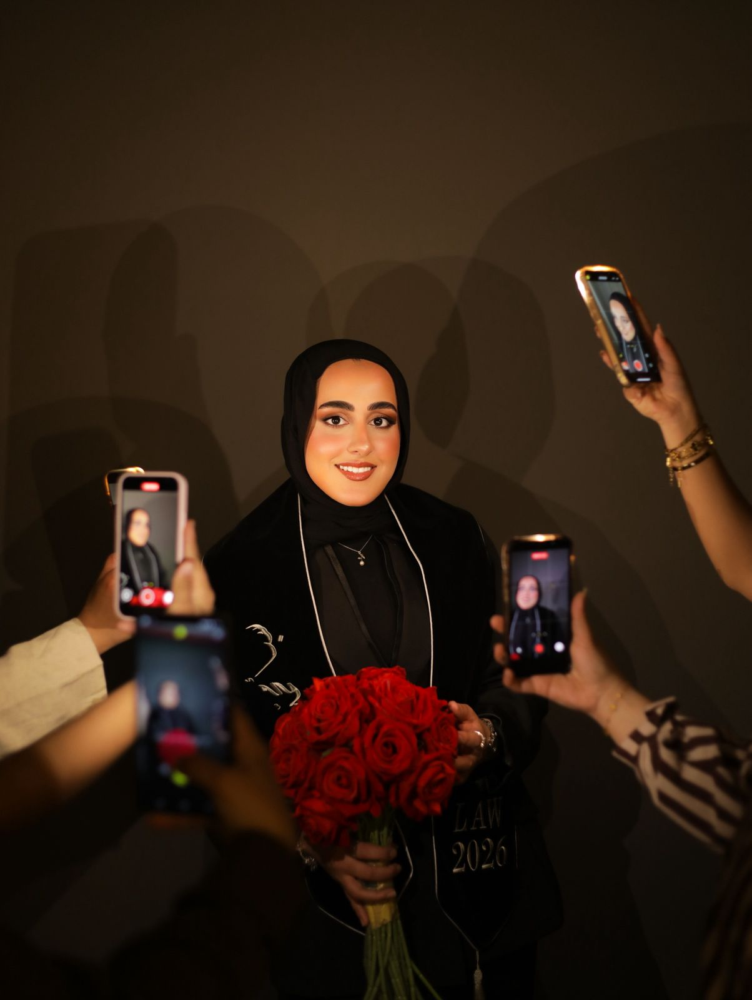
المرفق 01: إعلان التخرج
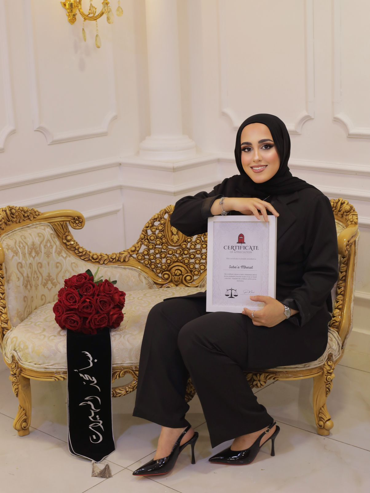
المرفق 02: سبأ وصفاء جاسر المهيرات
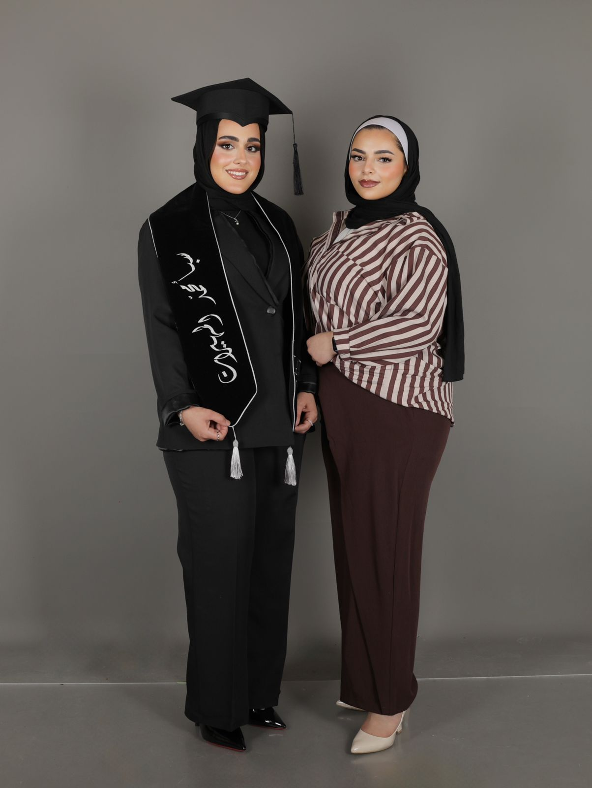
المرفق 03: لحظة الورد والتوثيق
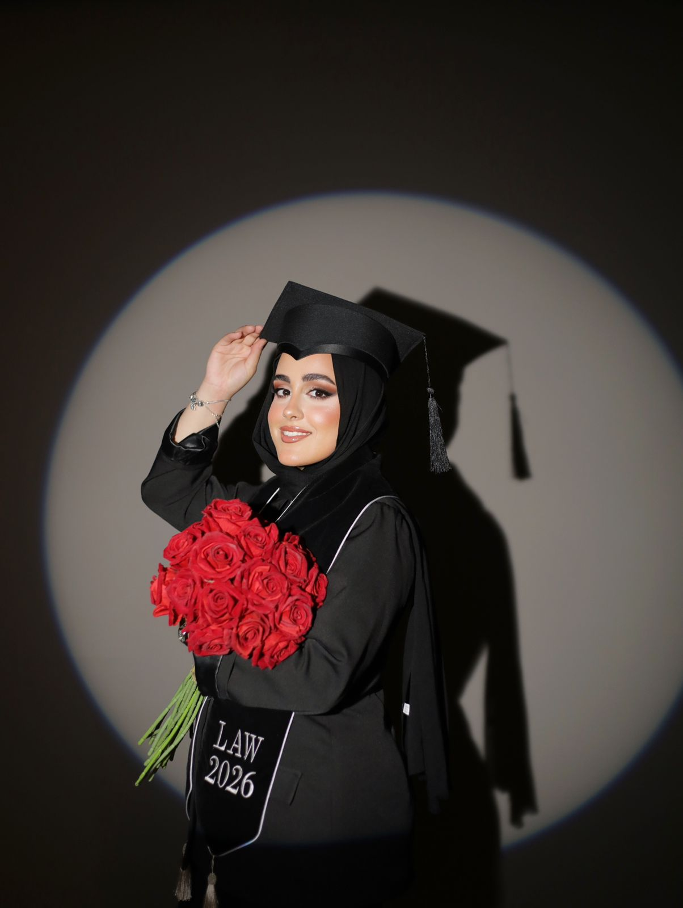
المرفق 04: الشهادة
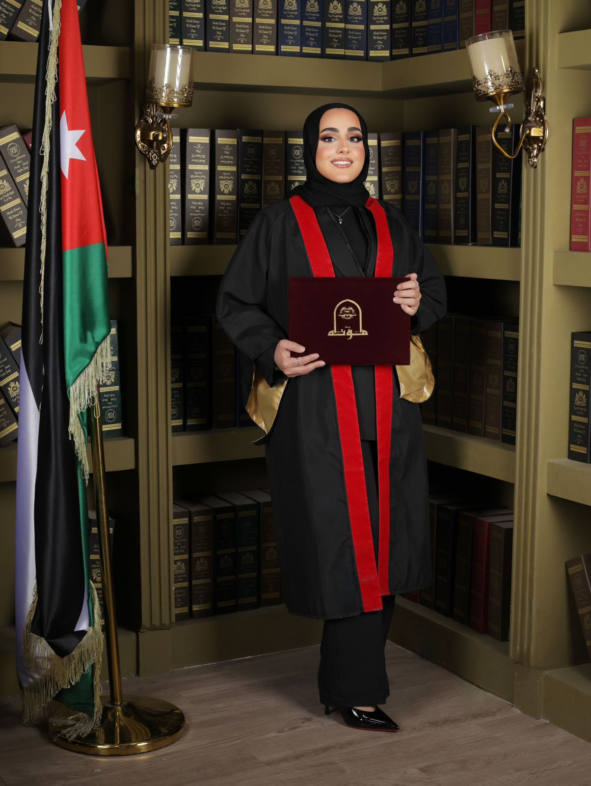
المرفق 05: روب القانون
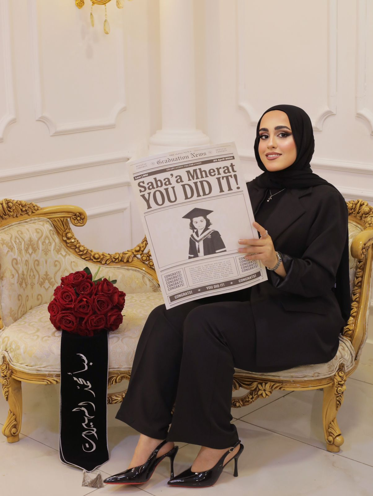
المرفق 06: قبعة التخرج والورد
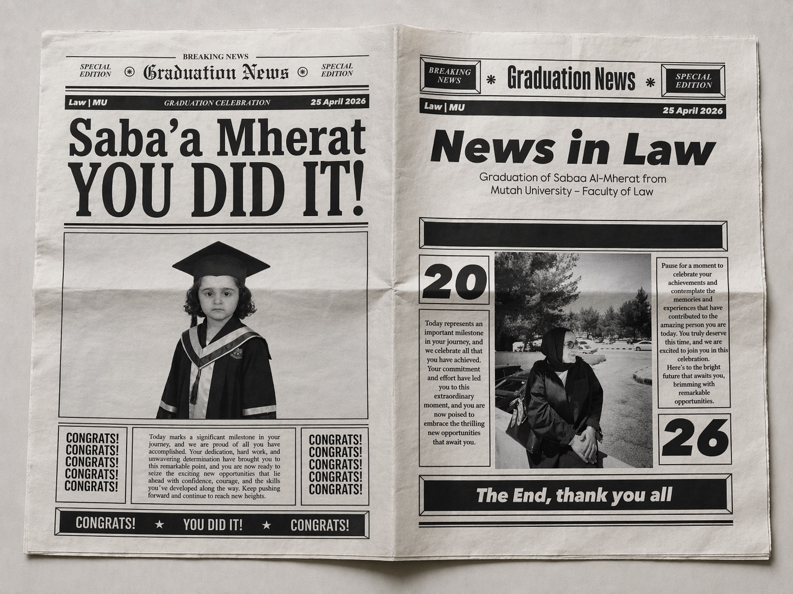
المرفق 07: صفحة الخبر الرسمي
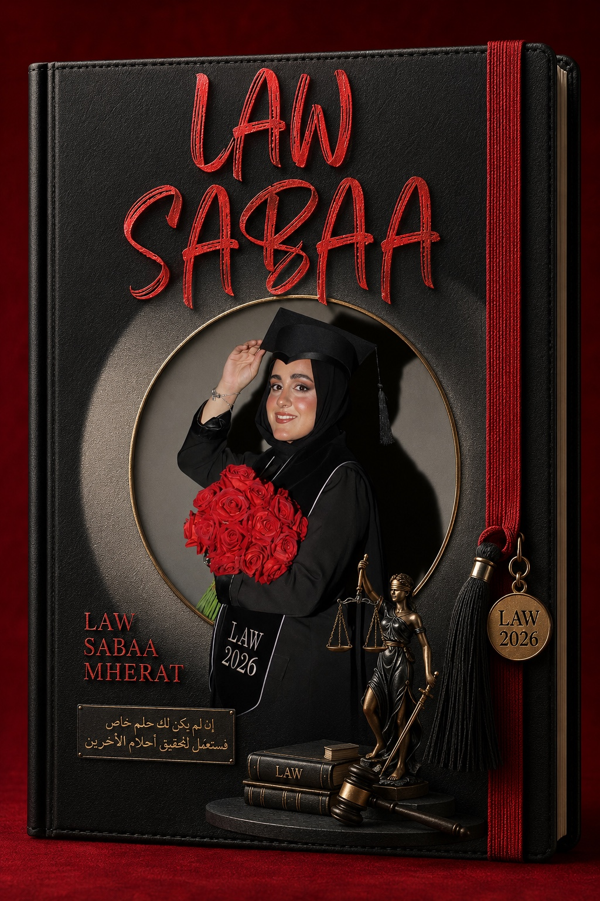
المرفق 08: غلاف دفتر التخرج
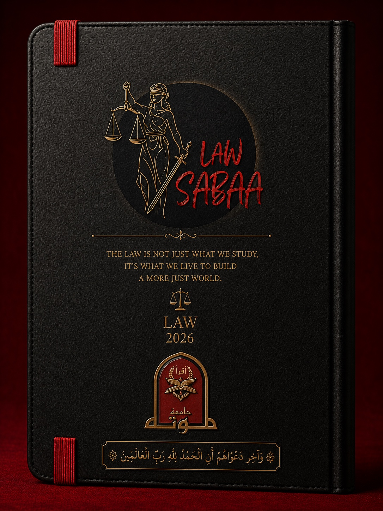
المرفق 09: خلفية دفتر التخرج
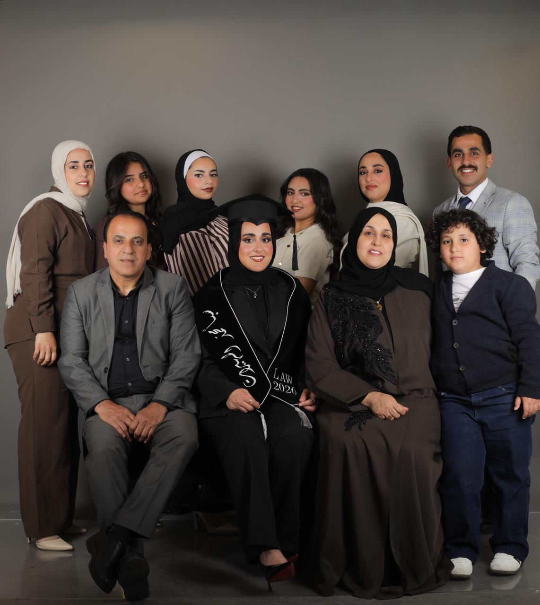
المرفق 10: الصورة الجماعية الأولى
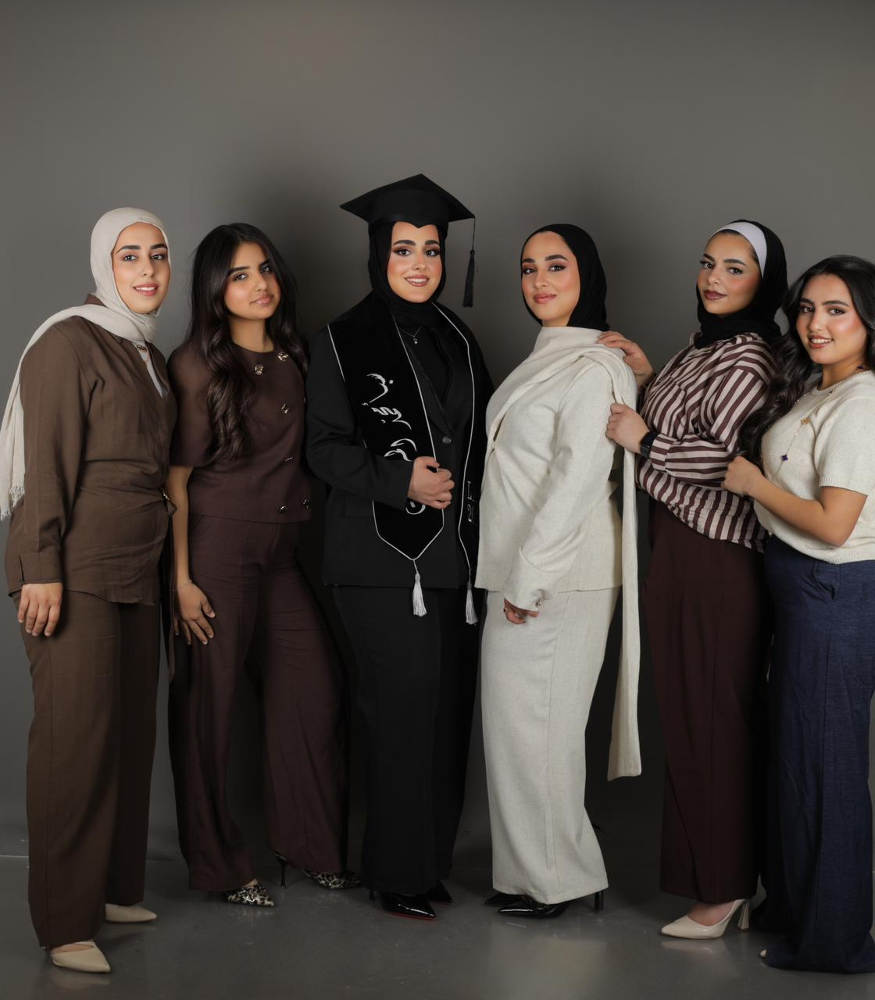
المرفق 11: الصورة الجماعية الثانية
محضر مصوّر
تم اعتماد هذا الفيديو ضمن الملف لأنه يوثق جزءًا من اليوم كما كان: بسيط، حلو، ومليان ناس بتحب سبأ.
الحكم النهائي
بعد الاطلاع على المرفقات، وسماع شهادة صفاء جاسر المهيرات، ومراجعة سجل التعب والإنجاز، قررت المحكمة ما يلي:
باب الاعتراض
السبب: الملف واضح، المرفقات موجودة، والنتيجة محسومة لصالح سبأ.
رسالة خارج المحضر
بعيدًا عن المحكمة والملفات، أنا فعلًا فخورة فيكي قد الدنيا. مش بس لأنك تخرجتي، بس لأنك وصلتي بعد تعب ودراسة واجتهاد وأيام أكيد ما كانت سهلة.
اليوم إنتِ مش بس خريجة قانون، إنتِ صاحبة قصة إرادة وعزيمة.
بحبك كثير، وفخورة فيكي أستاذتنا.
صفاء جاسر المهيرات
محكمة العيلة العليا
دائرة القضايا التي انتهت بفرحة
قرار عائلي رسمي
وبناءً على شهادة صفاء جاسر المهيرات، وبالاستناد إلى المرجعية القانونية العائلية للأستاذ جاسر علي المهيرات؛
تقرر المحكمة ما يلي:
أولًا: الحكم لصالح سبأ محمد علي المهيرات في قضية سبأ ضد سنوات التعب.
ثانيًا: منحها لقب محامية العيلة الرسمية.
ثالثًا: تسجيلها ضمن مفاخر آل البخّيت والمهيرات.
رابعًا: اعتماد هذه الوثيقة كتذكار عائلي رسمي، صالح للفرح والفخر والاستعراض عند الحاجة.
صدر الحكم حضوريًا بالحب، نهائيًا بلا استئناف.